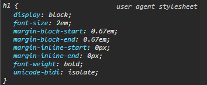

Por padrão, todo browser (navegador) já aplica algumas configurações CSS em alguns elementos. Por isso que quando eu crio um item e defino ele como sendo um h1 o browser já deixa ele com a letra maior, por exemplo. Eu consigo ver essas pré-configurações no meu navegador se eu for no item que eu quero ver, clicar com o botão direito e ir em "Inspecionar". Feito isso ele vai me mostrar as ferramentos de desenvolvedor e lá na aba de Estilos eu consigo ver os estilos que já foram aplicados por padrão.

Na imagem da pra ver as configurações que ele já aplica e se eu quiser eu posso remover isso depois, ou alterar no meu código.
Os navegadores tentam ao máximo padronizar esses estilos iniciais, mas nem sempre é possível. Então pode ser que pra tag h1 no Chrome e no Firefox tenham algumas diferenças nessas configurações padrão iniciais. Por isso foram desenvolvidas algumas alternativas para contornar isso.
O reset tem como objetivo justamente resetar essas configurações iniciais dos navegadores pra tentar manter uma compatilibilidade melhor. Então ele é basicamente um código CSS que vai remover todas essas formatações iniciais no documento completo, ai depois disso eu poderia ir lá e fazer as minhas formatações. Um dos mais famosos utilizados fica nesse site aqui: https://meyerweb.com/eric/tools/css/reset/index.html
O normalize já tentava não remover esses estilos iniciais porque considerava eles importantes, então tentava apenas normalizar os estilos entre os navegadores
O reboot seria tipo uma mistura dos dois: ele remove alguns estilos e tenta normalizar outros
Nesse curso ele não vai utilizar esses recursos, vamos fazer essas formatações manualmente mesmo.
Existem algumas propriedades das CSS que são passadas de pai para filho, como uma herança. Por exemplo: color, font-size, font-family... Então, se eu definir um color como vermelho no body de um documento, todos os filhos também receberam esse mesmo valor de color.
Um detalhe muito importante é que: se o elemento já possui um valor padrão para aquele atributo, a herança não vai afetar ele. Por exemplo, se eu criar uma pagina html nova e incluir nela um "h1", "p" e um "a" (link) e definir que a color do body vai ser red, ele vai afetar apenas o h1 e o p, mas não vai mudar a cor do "a" porque ela já é definida como padrão sendo a cor azul. Pra eu fazer ele herdar a cor eu tenho duas formas: